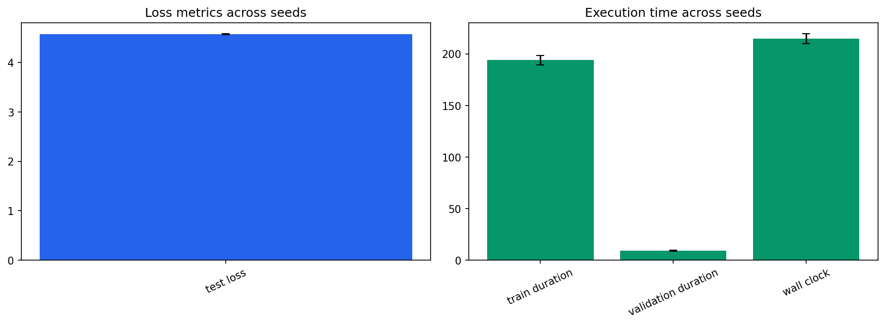

Seeds: [1, 7, 21, 42, 87]. Values are population mean +/- standard deviation.
| Test Loss | 4.57036 +/- 0.00756 |
|---|---|
| Test Perplexity | 96.5821 +/- 0.732 |
| Test Token Accuracy | 0.143571 +/- 0.00143 |
| Train Duration Seconds | 193.898 +/- 4.48 |
| Validation Duration Seconds | 9.02365 +/- 0.408 |
| Wall Clock Seconds | 214.548 +/- 4.74 |
| Processed Tokens | 1.04858e+06 +/- 0 |
